CODING AGENTS AS PIXEL WORLD MODELS
traex/DeepSeek-V4.1-Flash · mechanics_0004
点击播放 · 原生 RGB 像素
逐轮保存的候选
回放视频、检查图与代码变化。
每份候选均可单独播放。实际图片检查记录在下方工具轨迹中。
候选 01播放与检查图
点击播放 · 原生 RGB 像素

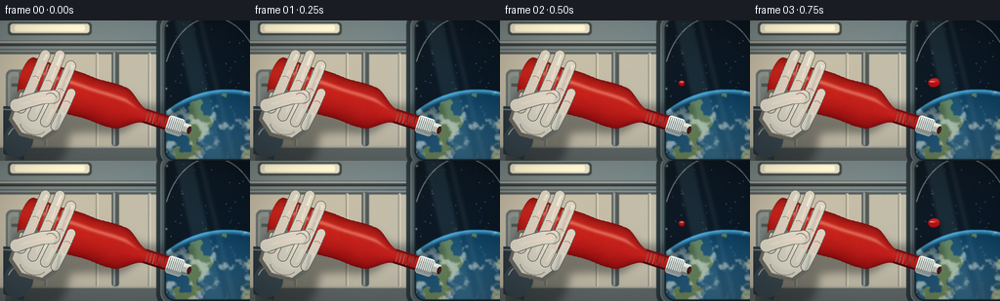
展开代码变化
--- 上一保存版本
+++ 本次保存版本
@@ -0,0 +1,570 @@
+from pathlib import Path
+import math
+
+import numpy as np
+from PIL import Image, ImageDraw, ImageFilter, ImageFont
+from scipy.ndimage import gaussian_filter
+
+import artifact_io
+
+
+ROOT = Path(__file__).resolve().parent
+OUT_W, OUT_H = 256, 144
+SS = 3
+W, H = OUT_W * SS, OUT_H * SS
+FRAMES = 20
+
+FONT_BOLD = "/usr/share/fonts/truetype/dejavu/DejaVuSansCondensed-Bold.ttf"
+FONT_SMALL = "/usr/share/fonts/truetype/dejavu/DejaVuSansCondensed.ttf"
+
+
+def smoothstep(a, b, x):
+ t = np.clip((np.asarray(x, dtype=np.float32) - a) / (b - a), 0.0, 1.0)
+ return t * t * (3.0 - 2.0 * t)
+
+
+def smoothstep_scalar(a, b, x):
+ t = max(0.0, min(1.0, (x - a) / (b - a)))
+ return t * t * (3.0 - 2.0 * t)
+
+
+def rgba_array(image):
+ return np.asarray(image, dtype=np.float32)
+
+
+def array_image(array):
+ return Image.fromarray(np.clip(array, 0, 255).astype(np.uint8), "RGBA")
+
+
+def capsule(draw, points, width, fill, outline=None, outline_width=2):
+ if outline is not None:
+ draw.line(points, fill=outline, width=width + outline_width * 2, joint="curve")
+ radius = (width + outline_width * 2) // 2
+ for x, y in (points[0], points[-1]):
+ draw.ellipse((x - radius, y - radius, x + radius, y + radius), fill=outline)
+ draw.line(points, fill=fill, width=width, joint="curve")
+ radius = width // 2
+ for x, y in (points[0], points[-1]):
+ draw.ellipse((x - radius, y - radius, x + radius, y + radius), fill=fill)
+
+
+def texture(shape, scale, seed, octaves=4):
+ h, w = shape
+ rng = np.random.default_rng(seed)
+ out = np.zeros((h, w), dtype=np.float32)
+ amp = 1.0
+ total = 0.0
+ for octave in range(octaves):
+ sw = max(2, int(w / (scale / (2 ** octave))))
+ sh = max(2, int(h / (scale / (2 ** octave))))
+ layer = rng.random((sh, sw)).astype(np.float32)
+ layer = np.asarray(
+ Image.fromarray((layer * 255).astype(np.uint8)).resize(
+ (w, h), Image.Resampling.BICUBIC
+ ),
+ dtype=np.float32,
+ ) / 255.0
+ out += layer * amp
+ total += amp
+ amp *= 0.52
+ out /= total
+ return (out - out.min()) / max(1e-5, out.max() - out.min())
+
+
+def make_background(frame_index, t):
+ yy, xx = np.mgrid[0:H, 0:W].astype(np.float32)
+
+ # Muted station interior with a cool ceiling and warmer lower panels.
+ top = np.array([91, 111, 116], dtype=np.float32)
+ bottom = np.array([185, 177, 158], dtype=np.float32)
+ mix = np.clip(yy / (H - 1), 0, 1)[..., None]
+ base = top * (1 - mix) + bottom * mix
+ side_light = np.exp(-(((xx - 55) / 390) ** 2 + ((yy - 40) / 260) ** 2))
+ base += side_light[..., None] * np.array([34, 27, 15], dtype=np.float32)
+ base -= np.clip((xx - 420) / 348, 0, 1)[..., None] * np.array([13, 10, 7], dtype=np.float32)
+
+ grain = texture((H, W), 34, 11, octaves=3)
+ base += (grain[..., None] - 0.5) * 8.0
+ image = array_image(np.dstack([base, np.full((H, W), 255, np.float32)]))
+ draw = ImageDraw.Draw(image)
+
+ # Wall panels and structural seams.
+ draw.rectangle((0, 0, 497, 432), fill=(167, 163, 148, 255))
+ draw.rectangle((0, 0, 497, 92), fill=(111, 127, 130, 255))
+ draw.rectangle((0, 92, 497, 432), fill=(184, 178, 160, 255))
+ draw.rectangle((0, 88, 497, 103), fill=(73, 84, 88, 255))
+ draw.rectangle((0, 92, 497, 96), fill=(130, 139, 137, 255))
+ draw.rectangle((0, 386, 505, 432), fill=(91, 99, 98, 255))
+ draw.rectangle((0, 386, 505, 391), fill=(166, 166, 153, 255))
+
+ for sx in (137, 294, 455):
+ draw.rectangle((sx, 100, sx + 4, 386), fill=(137, 135, 124, 255))
+ draw.rectangle((sx + 4, 100, sx + 7, 386), fill=(213, 205, 183, 255))
+
+ # Storage pouch and a padded wall pad keep the left side clearly inhabited.
+ draw.rounded_rectangle((18, 151, 109, 335), radius=18, fill=(91, 103, 106, 255))
+ draw.rounded_rectangle((24, 158, 103, 327), radius=15, fill=(133, 142, 138, 255))
+ draw.rounded_rectangle((31, 172, 96, 310), radius=12, fill=(118, 128, 125, 255))
+ draw.rectangle((35, 194, 92, 203), fill=(72, 80, 80, 255))
+ draw.rectangle((35, 270, 92, 279), fill=(72, 80, 80, 255))
+ draw.rectangle((58, 158, 68, 328), fill=(85, 91, 90, 255))
+
+ # Overhead light and grab rail.
+ draw.rounded_rectangle((24, 5, 281, 45), radius=11, fill=(55, 66, 70, 255))
+ draw.rounded_rectangle((31, 10, 274, 38), radius=8, fill=(224, 221, 198, 255))
+ draw.rounded_rectangle((45, 14, 260, 32), radius=6, fill=(255, 249, 216, 255))
+ draw.rounded_rectangle((-12, 62, 508, 78), radius=8, fill=(61, 70, 73, 255))
+ draw.rectangle((-8, 64, 508, 68), fill=(159, 166, 162, 255))
+ draw.rectangle((-8, 74, 508, 77), fill=(34, 41, 44, 255))
+ draw.rounded_rectangle((343, 96, 365, 386), radius=8, fill=(73, 82, 84, 255))
+ draw.rectangle((348, 98, 353, 384), fill=(151, 156, 149, 255))
+
+ # Cupola window: black orbital sky above a broad curved Earth limb.
+ draw.rounded_rectangle((480, -28, 824, 454), radius=44, fill=(39, 49, 53, 255))
+ draw.rounded_rectangle((493, -17, 811, 443), radius=37, fill=(72, 85, 88, 255))
+ draw.rounded_rectangle((505, -5, 799, 431), radius=31, fill=(10, 18, 27, 255))
+
+ earth = np.zeros((H, W, 4), dtype=np.float32)
+ ex, ey, er = 699.0, 514.0, 302.0
+ nx = (xx - ex) / er
+ ny = (yy - ey) / er
+ inside = nx * nx + ny * ny <= 1.0
+ sphere_z = np.sqrt(np.clip(1.0 - nx * nx - ny * ny, 0, 1))
+ cloud_noise = texture((H, W), 32, 27, octaves=5)
+ land_noise = texture((H, W), 48, 41, octaves=4)
+ land_pattern = (
+ np.sin(nx * 8.1 + ny * 3.3)
+ + 0.65 * np.sin(nx * 17.0 - ny * 7.0 + 1.2)
+ + 0.42 * np.cos(nx * 29.0 + ny * 12.0)
+ )
+ land = ((land_pattern * 0.26 + land_noise) > 0.70) & (nx * nx + ny * ny < 0.92)
+ ocean = np.zeros((H, W, 3), dtype=np.float32)
+ ocean[:] = np.array([21, 66, 96], dtype=np.float32)
+ ocean += (sphere_z[..., None] ** 1.6) * np.array([10, 21, 27], dtype=np.float32)
+ ocean -= np.clip(-ny, 0, 1)[..., None] * np.array([10, 12, 14], dtype=np.float32)
+ ocean[land] = np.array([91, 117, 79], dtype=np.float32)
+ ocean[land] -= np.clip(ny[land], 0, 1)[:, None] * np.array([23, 24, 18], dtype=np.float32)
+ cloud = smoothstep(0.56, 0.79, cloud_noise)[..., None]
+ ocean = ocean * (1.0 - 0.58 * cloud) + np.array([223, 229, 218], np.float32) * 0.58 * cloud
+ ocean += (sphere_z[..., None] ** 3) * np.array([20, 13, 7], np.float32)
+ atmosphere = smoothstep(0.94, 1.0, np.sqrt(nx * nx + ny * ny)) * inside
+ ocean += atmosphere[..., None] * np.array([58, 109, 128], np.float32)
+ earth[..., :3] = ocean
+ earth[..., 3] = inside.astype(np.float32) * 255.0
+ earth_image = array_image(earth)
+ window_mask = Image.new("L", (W, H), 0)
+ ImageDraw.Draw(window_mask).rounded_rectangle((505, -5, 799, 431), radius=31, fill=255)
+ clipped = Image.new("RGBA", (W, H), (0, 0, 0, 0))
+ clipped.paste(earth_image, (0, 0), window_mask)
+ image = Image.alpha_composite(image, clipped)
+ draw = ImageDraw.Draw(image)
+
+ # Sparse cold stars and a faint glass reflection.
+ rng = np.random.default_rng(93)
+ for _ in range(38):
+ sx = int(rng.uniform(515, 790))
+ sy = int(rng.uniform(8, 238))
+ if ((sx - ex) / er) ** 2 + ((sy - ey) / er) ** 2 > 1.0:
+ bright = int(rng.uniform(90, 225))
+ draw.ellipse((sx, sy, sx + 1, sy + 1), fill=(bright, bright + 4, 231, 210))
+
+ reflection = Image.new("RGBA", (W, H), (0, 0, 0, 0))
+ rd = ImageDraw.Draw(reflection)
+ rd.polygon([(531, -10), (591, -10), (691, 429), (630, 429)], fill=(149, 206, 218, 24))
+ rd.polygon([(603, -10), (622, -10), (730, 429), (708, 429)], fill=(227, 246, 242, 13))
+ reflection = reflection.filter(ImageFilter.GaussianBlur(5))
+ image = Image.alpha_composite(image, reflection)
+ draw = ImageDraw.Draw(image)
+
+ # Window frame details and fasteners.
+ draw.rounded_rectangle((493, -17, 811, 443), radius=37, outline=(113, 127, 128, 255), width=3)
+ draw.rounded_rectangle((505, -5, 799, 431), radius=31, outline=(24, 33, 38, 255), width=5)
+ draw.arc((498, -10, 806, 438), 203, 330, fill=(177, 187, 182, 120), width=2)
+ for bx, by in ((513, 16), (513, 405), (787, 16), (787, 405), (511, 210), (790, 210)):
+ draw.ellipse((bx - 4, by - 4, bx + 4, by + 4), fill=(31, 39, 42, 255))
+ draw.ellipse((bx - 3, by - 3, bx + 2, by + 2), fill=(117, 125, 123, 255))
+
+ # Gentle camera breathing stays below a noticeable camera move.
+ drift_x = round(0.7 * math.sin(t * math.tau * 0.65))
+ drift_y = round(0.45 * math.sin(t * math.tau * 0.42 + 1.1))
+ if drift_x or drift_y:
+ shifted = Image.new("RGBA", (W, H), (0, 0, 0, 255))
+ shifted.paste(image, (drift_x, drift_y))
+ image = shifted
+
+ image = image.filter(ImageFilter.GaussianBlur(1.15))
+ return image.convert("RGBA")
+
+
+def bottle_transform(t):
+ shift = smoothstep_scalar(0.06, 0.76, t)
+ cx = 350.0 + 1.7 * shift
+ cy = 300.0 - 1.2 * shift
+ angle = -18.0 + 0.9 * shift
+ return cx, cy, angle
+
+
+def transform_point(point, cx, cy, angle):
+ theta = math.radians(angle)
+ dx, dy = point[0] - 340.0, point[1] - 210.0
+ return (
+ cx + math.cos(theta) * dx - math.sin(theta) * dy,
+ cy + math.sin(theta) * dx + math.cos(theta) * dy,
+ )
+
+
+def bottle_local(frame_index, t):
+ lw, lh = 680, 420
+ yy, xx = np.mgrid[0:lh, 0:lw].astype(np.float32)
+ squeeze = 0.06 + 0.94 * smoothstep_scalar(0.08, 0.62, t)
+ squeeze *= 1.0 - 0.10 * smoothstep_scalar(0.74, 1.0, t)
+
+ cy = 175.0 - 2.2 * squeeze
+ body_r = np.full_like(xx, 66.0)
+ shoulder = smoothstep(348, 428, xx)
+ body_r = body_r * (1.0 - shoulder) + 22.0 * shoulder
+ left_cap = xx < 48
+ body_r[left_cap] = 66.0 * np.sqrt(
+ np.clip(1.0 - ((48.0 - xx[left_cap]) / 23.0) ** 2, 0.0, 1.0)
+ )
+ indent = 11.5 * squeeze * np.exp(-((xx - 113.0) / 42.0) ** 2)
+ body_r -= indent
+ body_r += 1.5 * np.sin((xx - 48.0) / 19.0) * smoothstep(48, 70, xx) * (1 - shoulder)
+
+ body = (xx >= 25) & (xx <= 429) & (np.abs(yy - cy) <= body_r)
+ neck = (xx >= 425) & (xx <= 502) & (np.abs(yy - cy) <= 21.0)
+ cap = (xx >= 500) & (xx <= 551) & (np.abs(yy - cy) <= 26.0)
+ nozzle = (xx >= 550) & (xx <= 571) & (np.abs(yy - cy) <= 17.0)
+ silhouette = body | neck | cap | nozzle
+
+ yn = (yy - cy) / np.maximum(body_r, 1.0)
+ profile = np.sqrt(np.clip(1.0 - yn * yn, 0.0, 1.0))
+ edge = np.array([72, 3, 6], dtype=np.float32)
+ middle = np.array([161, 15, 18], dtype=np.float32)
+ bright = np.array([223, 48, 34], dtype=np.float32)
+ shade = np.clip(0.28 + 0.72 * profile, 0, 1)[..., None]
+ color = edge * (1 - shade) + middle * shade
+ upper = np.clip(0.68 - 0.52 * yn, 0, 1)[..., None] * profile[..., None]
+ color += upper * (bright - middle) * 0.56
+
+ paste_texture = texture((lh, lw), 22, 7, octaves=3)
+ color += (paste_texture[..., None] - 0.5) * np.array([8, 3, 3], dtype=np.float32)
+ spec_line = np.exp(-((yn + 0.43) / 0.095) ** 2)
+ spec_line *= smoothstep(48, 82, xx) * (1 - smoothstep(350, 420, xx))
+ color = color * (1 - 0.42 * spec_line[..., None]) + np.array(
+ [255, 178, 153], dtype=np.float32
+ ) * 0.42 * spec_line[..., None]
+
+ alpha = silhouette.astype(np.float32) * 255.0
+ layer = np.dstack([color, alpha])
+ bottle = array_image(layer)
+ draw = ImageDraw.Draw(bottle)
+
+ # Ribbed squeeze-bottle shoulders.
+ for rx in range(72, 162, 12):
+ rr = float(body_r[0, min(rx, lw - 1)])
+ draw.line((rx, cy - rr + 7, rx + 2, cy + rr - 7), fill=(103, 8, 10, 66), width=2)
+ draw.line((rx + 2, cy - rr + 8, rx + 4, cy + rr - 8), fill=(229, 73, 53, 24), width=1)
+
+ # Cream label, shaded to follow the cylindrical bottle.
+ label_box = (184, 124, 344, 226)
+ label_mask = Image.new("L", (lw, lh), 0)
+ ld = ImageDraw.Draw(label_mask)
+ ld.rounded_rectangle(label_box, radius=9, fill=255)
+ ld.rectangle((184, 124, 344, 133), fill=0)
+ ld.rectangle((184, 217, 344, 226), fill=0)
+ label_mask = Image.fromarray(
+ (np.asarray(label_mask, dtype=np.uint16) * body.astype(np.uint16) // 255).astype(
+ np.uint8
+ )
+ )
+ label = Image.new("RGBA", (lw, lh), (0, 0, 0, 0))
+ label_draw = ImageDraw.Draw(label)
+ label_draw.rounded_rectangle(label_box, radius=9, fill=(236, 220, 175, 255))
+ label_draw.rectangle((184, 124, 344, 137), fill=(177, 43, 32, 255))
+ label_draw.rectangle((184, 211, 344, 226), fill=(177, 43, 32, 255))
+ label_draw.rounded_rectangle((190, 141, 338, 211), radius=5, outline=(151, 45, 32, 180), width=2)
+ try:
+ title_font = ImageFont.truetype(FONT_BOLD, 25)
+ sub_font = ImageFont.truetype(FONT_SMALL, 12)
+ except OSError:
+ title_font = ImageFont.load_default()
+ sub_font = ImageFont.load_default()
+ label_draw.text((261, 169), "KETCHUP", font=title_font, fill=(157, 28, 22, 255), anchor="mm")
+ label_draw.text((261, 199), "TOMATO", font=sub_font, fill=(112, 60, 41, 255), anchor="mm")
+ # Small tomato mark.
+ label_draw.ellipse((197, 162, 219, 184), fill=(184, 36, 26, 255))
+ label_draw.ellipse((200, 164, 213, 174), fill=(229, 84, 48, 255))
+ label_draw.polygon([(208, 161), (202, 154), (209, 157), (214, 151), (215, 159)], fill=(62, 109, 57, 255))
+ label_pixels = rgba_array(label)
+ label_pixels[..., :3] *= np.clip(0.80 + 0.18 * profile, 0.65, 1.0)[..., None]
+ label = array_image(label_pixels)
+ bottle = Image.composite(label, bottle, label_mask)
+ draw = ImageDraw.Draw(bottle)
+
+ # Neck rings and a matte white screw cap with crisp ribs.
+ draw.rectangle((427, cy - 22, 502, cy - 17), fill=(113, 9, 11, 255))
+ draw.rectangle((429, cy + 17, 501, cy + 22), fill=(73, 4, 7, 255))
+ for rx in range(434, 499, 11):
+ draw.line((rx, cy - 16, rx + 1, cy + 16), fill=(205, 56, 38, 80), width=2)
+
+ cap_mask = Image.new("L", (lw, lh), 0)
+ ImageDraw.Draw(cap_mask).rounded_rectangle((500, cy - 27, 552, cy + 27), radius=8, fill=255)
+ cap_image = Image.new("RGBA", (lw, lh), (0, 0, 0, 0))
+ cd = ImageDraw.Draw(cap_image)
+ cd.rounded_rectangle((500, cy - 27, 552, cy + 27), radius=8, fill=(220, 216, 201, 255))
+ cd.rectangle((500, cy - 27, 552, cy - 12), fill=(240, 236, 220, 255))
+ cd.rectangle((500, cy + 14, 552, cy + 27), fill=(151, 151, 144, 255))
+ for rx in range(505, 551, 6):
+ cd.line((rx, cy - 22, rx, cy + 22), fill=(138, 140, 134, 180), width=2)
+ cd.line((rx + 1, cy - 21, rx + 1, cy + 20), fill=(246, 242, 225, 90), width=1)
+ bottle = Image.composite(cap_image, bottle, cap_mask)
+ draw = ImageDraw.Draw(bottle)
+
+ # Nozzle and the dark, open aperture where the ketchup exits.
+ draw.rounded_rectangle((550, cy - 17, 572, cy + 17), radius=8, fill=(184, 181, 169, 255))
+ draw.rectangle((550, cy - 17, 572, cy - 7), fill=(234, 229, 211, 255))
+ draw.rectangle((550, cy + 10, 572, cy + 17), fill=(116, 119, 115, 255))
+ draw.ellipse((565, cy - 12, 577, cy + 12), fill=(47, 31, 28, 255))
+ draw.ellipse((568, cy - 9, 575, cy + 8), fill=(94, 17, 15, 255))
+ draw.arc((567, cy - 11, 578, cy + 11), 100, 260, fill=(31, 20, 19, 255), width=2)
+
+ # Dark rim just outside the bottle silhouette gives it separation from the window.
+ edge_pixels = rgba_array(bottle)
+ edge_alpha = gaussian_filter(edge_pixels[..., 3], 1.8)
+ dark_rim = (edge_alpha > 16) & (edge_pixels[..., 3] < 90)
+ edge_pixels[dark_rim, :3] *= 0.35
+ bottle = array_image(edge_pixels)
+
+ hand = make_hand(t, squeeze, lw, lh, cy)
+ combined = Image.alpha_composite(bottle, hand)
+ return combined
+
+
+def make_hand(t, squeeze, lw, lh, bottle_cy):
+ hand = Image.new("RGBA", (lw, lh), (0, 0, 0, 0))
+ draw = ImageDraw.Draw(hand)
+
+ # Suit cuff enters from lower left.
+ draw.polygon(
+ [(2, 282), (58, 265), (106, 311), (114, 420), (0, 420)],
+ fill=(39, 52, 61, 255),
+ outline=(20, 27, 32, 255),
+ )
+ draw.line((7, 290, 62, 275), fill=(93, 112, 120, 255), width=5)
+ draw.line((61, 277, 108, 320), fill=(116, 131, 134, 255), width=7)
+ draw.ellipse((36, 309, 126, 420), fill=(51, 66, 74, 255))
+ draw.arc((46, 319, 117, 408), 185, 342, fill=(122, 139, 142, 180), width=4)
+
+ palm_outline = (105, 103, 96, 255)
+ palm_fill = (205, 202, 188, 255)
+ palm_points = [(35, 218), (77, 198), (147, 214), (182, 251), (184, 306), (153, 346), (81, 352), (34, 315)]
+ draw.polygon(palm_points, fill=palm_outline)
+ inner_palm = [(43, 225), (80, 208), (139, 223), (171, 255), (173, 300), (148, 335), (85, 340), (44, 308)]
+ draw.polygon(inner_palm, fill=palm_fill)
+ draw.ellipse((54, 216, 146, 270), fill=(220, 216, 202, 255))
+ draw.ellipse((63, 246, 158, 319), fill=(211, 208, 194, 255))
+ draw.arc((66, 264, 155, 337), 25, 153, fill=(157, 156, 146, 180), width=3)
+
+ # Four curled fingers wrap around the near face of the bottle.
+ fingers = [
+ [(59, 269), (67, 220), (72, 166), (76, 116), (79, 90)],
+ [(101, 281), (109, 225), (115, 166), (120, 112), (122, 77)],
+ [(143, 286), (151, 232), (157, 179), (162, 128), (164, 98)],
+ [(176, 290), (183, 248), (188, 209), (191, 177)],
+ ]
+ for index, points in enumerate(fingers):
+ width = 29 if index < 3 else 25
+ capsule(draw, points, width, (203, 200, 187, 255), (93, 92, 88, 255), 2)
+ highlight = [(x + 4, y - 2) for x, y in points]
+ draw.line(highlight, fill=(237, 232, 215, 205), width=max(4, width // 4), joint="curve")
+ # Knuckle creases.
+ kx, ky = points[2]
+ draw.arc((kx - 10, ky - 5, kx + 11, ky + 11), 205, 340, fill=(151, 150, 140, 200), width=2)
+
+ # Thumb crosses the lower body and visibly presses inward.
+ thumb_points = [(43, 265), (76, 240), (110, 218), (142, 205)]
+ capsule(draw, thumb_points, 38, (210, 206, 193, 255), (97, 96, 91, 255), 2)
+ draw.line([(54, 258), (82, 238), (113, 220), (140, 210)], fill=(239, 234, 217, 220), width=8)
+ draw.arc((117, 195, 155, 229), 205, 335, fill=(145, 145, 137, 190), width=3)
+
+ # Soft blue rim light from the cupola catches the right edge of the glove.
+ rim = Image.new("RGBA", (lw, lh), (0, 0, 0, 0))
+ rd = ImageDraw.Draw(rim)
+ rd.line([(181, 252), (182, 301), (153, 339)], fill=(103, 169, 179, 105), width=5)
+ rd.line([(164, 101), (160, 172), (151, 225)], fill=(92, 147, 157, 70), width=4)
+ rim = rim.filter(ImageFilter.GaussianBlur(2.2))
+ return Image.alpha_composite(hand, rim)
+
+
+def make_fluid(frame_index, t, start):
+ roi = (530, 45, 768, 340)
+ x0, y0, x1, y1 = roi
+ yy, xx = np.mgrid[y0:y1, x0:x1].astype(np.float32)
+ field = np.zeros(xx.shape, dtype=np.float32)
+ spec_spots = []
+
+ sx, sy = start
+ reach = 158.0 * smoothstep_scalar(0.055, 0.58, t)
+ if reach > 2:
+ count = int(reach // 7) + 1
+ for index in range(count):
+ s = min(reach, index * 7.0)
+ wave = 4.3 * math.sin(s / 29.0 - t * 5.2)
+ px = sx + s
+ py = sy - 0.31 * s + wave + 0.0017 * s * s
+ rr = 14.5 + 2.0 * math.sin(s / 24.0 + 0.8)
+ field += np.exp(-1.8 * (((xx - px) / rr) ** 2 + ((yy - py) / (rr * 0.92)) ** 2))
+ if index % 6 == 0:
+ spec_spots.append((px, py - rr * 0.30, rr * 0.54, rr * 0.12))
+
+ blob_specs = [
+ ((648, 143), 34, 0.26, (607, 174)),
+ ((707, 112), 42, 0.37, (622, 166)),
+ ((739, 181), 36, 0.44, (631, 173)),
+ ((682, 249), 31, 0.54, (635, 184)),
+ ((751, 251), 27, 0.63, (647, 191)),
+ ((610, 112), 25, 0.57, (619, 165)),
+ ((735, 83), 23, 0.70, (644, 158)),
+ ]
+ for index, (final, radius, birth, origin) in enumerate(blob_specs):
+ age = smoothstep_scalar(birth, min(0.98, birth + 0.34), t)
+ if age <= 0.01:
+ continue
+ drift = smoothstep_scalar(birth, 1.0, t)
+ wobble_x = 3.2 * math.sin(t * 5.0 + index * 1.8)
+ wobble_y = 2.6 * math.cos(t * 4.3 + index * 2.1)
+ cx = origin[0] + (final[0] - origin[0]) * drift + wobble_x * age
+ cy = origin[1] + (final[1] - origin[1]) * drift + wobble_y * age
+ rx = radius * (0.55 + 0.45 * age)
+ ry = radius * (0.82 + 0.18 * age)
+ angle = 0.35 * math.sin(index * 1.7 + t * 2.2)
+ ca, sa = math.cos(angle), math.sin(angle)
+ dx = xx - cx
+ dy = yy - cy
+ rxdx = (ca * dx + sa * dy) / rx
+ rydy = (-sa * dx + ca * dy) / ry
+ field += np.exp(-1.55 * (rxdx * rxdx + rydy * rydy)) * (0.86 + 0.14 * age)
+ spec_spots.append(
+ (cx - 0.24 * rx * ca + 0.20 * ry * sa, cy - 0.27 * ry * ca - 0.18 * rx * sa, rx * 0.30, ry * 0.10)
+ )
+
+ satellites = [
+ ((632, 86), 10, 0.58),
+ ((675, 70), 8, 0.68),
+ ((757, 125), 9, 0.72),
+ ((706, 278), 7, 0.76),
+ ((767, 208), 8, 0.78),
+ ((598, 248), 6, 0.82),
+ ]
+ for index, (center, radius, birth) in enumerate(satellites):
+ age = smoothstep_scalar(birth, 1.0, t)
+ if age <= 0.01:
+ continue
+ cx = center[0] + 4.0 * math.sin(t * 4.8 + index)
+ cy = center[1] + 3.2 * math.cos(t * 4.1 + index * 1.3)
+ rr = radius * age
+ field += np.exp(-2.0 * (((xx - cx) / rr) ** 2 + ((yy - cy) / (rr * 0.9)) ** 2))
+ spec_spots.append((cx - rr * 0.22, cy - rr * 0.25, rr * 0.32, rr * 0.09))
+
+ mask = smoothstep(0.39, 0.48, field)
+ core = smoothstep(0.43, 0.88, field)
+ if mask.max() < 0.01:
+ return Image.new("RGBA", (W, H), (0, 0, 0, 0))
+
+ gy, gx = np.gradient(field)
+ norm = np.sqrt(gx * gx + gy * gy) + 1e-4
+ nx = -gx / norm
+ ny = -gy / norm
+ lam = np.clip(nx * -0.45 + ny * -0.89, 0, 1)
+
+ deep = np.array([91, 2, 7], dtype=np.float32)
+ red = np.array([167, 12, 16], dtype=np.float32)
+ tomato = np.array([218, 40, 27], dtype=np.float32)
+ color = deep * (1 - core[..., None]) + red * core[..., None]
+ color += (tomato - red) * (0.55 * core * np.clip(-ny, 0, 1))[..., None]
+ color += lam[..., None] * (1 - core[..., None]) * np.array([75, 21, 10], dtype=np.float32)
+ color *= (0.91 + 0.09 * core[..., None])
+
+ texture_mask = texture((H, W), 18, 31 + frame_index, octaves=3)[y0:y1, x0:x1]
+ color += (texture_mask[..., None] - 0.5) * 8.0 * core[..., None]
+
+ spec = np.zeros_like(field)
+ for cx, cy, rx, ry in spec_spots:
+ spec += np.exp(-(((xx - cx) / max(rx, 2)) ** 2 + ((yy - cy) / max(ry, 1.2)) ** 2))
+ spec = np.clip(spec, 0, 1) * core
+ color = color * (1 - 0.72 * spec[..., None]) + np.array([255, 206, 186], dtype=np.float32) * 0.72 * spec[..., None]
+
+ # A narrow, darker edge keeps the thick sauce readable over Earth.
+ rim = smoothstep(0.34, 0.42, field) * (1 - smoothstep(0.45, 0.56, field))
+ color *= 1.0 - 0.22 * rim[..., None]
+
+ fluid_roi = np.dstack([color, mask * 255.0])
+ fluid_image = array_image(fluid_roi)
+ canvas = Image.new("RGBA", (W, H), (0, 0, 0, 0))
+ canvas.paste(fluid_image, (x0, y0))
+
+ # Very soft cast shadow into the window makes the liquid feel volumetric.
+ shadow_alpha = Image.fromarray((mask * 85).astype(np.uint8)).filter(
+ ImageFilter.GaussianBlur(7)
+ )
+ shadow = Image.new("RGBA", (x1 - x0, y1 - y0), (24, 5, 8, 255))
+ shadow.putalpha(shadow_alpha)
+ shadow_canvas = Image.new("RGBA", (W, H), (0, 0, 0, 0))
+ shadow_canvas.paste(shadow, (x0 + 6, y0 + 9))
+ return Image.alpha_composite(shadow_canvas, canvas)
+
+
+def composite_bottle(background, bottle, cx, cy, angle):
+ shadow_mask = bottle.getchannel("A").filter(ImageFilter.GaussianBlur(12))
+ shadow = Image.new("RGBA", (W, H), (0, 0, 0, 0))
+ shadow.paste((15, 20, 22, 108), (16, 106), shadow_mask)
+ background = Image.alpha_composite(background, shadow)
+
+ rotated = bottle.rotate(angle, resample=Image.Resampling.BICUBIC, center=(340, 210))
+ layer = Image.new("RGBA", (W, H), (0, 0, 0, 0))
+ layer.alpha_composite(rotated, (round(cx - 340), round(cy - 210)))
+ return Image.alpha_composite(background, layer)
+
+
+def finalize(image, frame_index):
+ pixels = rgba_array(image.convert("RGB"))
+ yy, xx = np.mgrid[0:H, 0:W].astype(np.float32)
+ # Warm key glow, cool window spill, and a restrained vignette.
+ key = np.exp(-(((xx - 105) / 390) ** 2 + ((yy - 20) / 270) ** 2))
+ pixels += key[..., None] * np.array([13, 9, 3], dtype=np.float32)
+ cool = np.exp(-(((xx - 670) / 210) ** 2 + ((yy - 205) / 250) ** 2))
+ pixels += cool[..., None] * np.array([0, 7, 11], dtype=np.float32)
+ nx = (xx - W * 0.48) / (W * 0.61)
+ ny = (yy - H * 0.47) / (H * 0.68)
+ vignette = np.clip(1.07 - 0.25 * (nx * nx + ny * ny), 0.72, 1.03)
+ pixels *= vignette[..., None]
+
+ rng = np.random.default_rng(1000 + frame_index)
+ noise = rng.normal(0.0, 1.9, (H, W, 1)).astype(np.float32)
+ pixels += noise
+ result = Image.fromarray(np.clip(pixels, 0, 255).astype(np.uint8), "RGB")
+ result = result.resize((OUT_W, OUT_H), Image.Resampling.LANCZOS)
+ return np.asarray(result, dtype=np.uint8)
+
+
+def generate_frames():
+ frames = []
+ for index in range(FRAMES):
+ t = index / (FRAMES - 1)
+ background = make_background(index, t)
+ cx, cy, angle = bottle_transform(t)
+ start = transform_point((570, 175), cx, cy, angle)
+ fluid = make_fluid(index, t, start)
+ scene = Image.alpha_composite(background, fluid)
+ bottle = bottle_local(index, t)
+ scene = composite_bottle(scene, bottle, cx, cy, angle)
+ frames.append(finalize(scene, index))
+ print(f"rendered {index + 1:02d}/{FRAMES}", flush=True)
+ return np.stack(frames, axis=0)
+
+
+if __name__ == "__main__":
+ frames = generate_frames()
+ artifact_io.save(frames, ROOT)
+ print("saved", frames.shape, frames.dtype)
候选 02播放与检查图
点击播放 · 原生 RGB 像素

展开代码变化
--- 上一保存版本
+++ 本次保存版本
@@ -2,7 +2,7 @@
import math
import numpy as np
-from PIL import Image, ImageDraw, ImageFilter, ImageFont
+from PIL import Image, ImageChops, ImageDraw, ImageFilter, ImageFont
from scipy.ndimage import gaussian_filter
import artifact_io
@@ -358,6 +358,7 @@
palm_outline = (105, 103, 96, 255)
palm_fill = (205, 202, 188, 255)
+ press = 5.0 * smoothstep_scalar(0.10, 0.48, t) * (1.0 - 0.34 * smoothstep_scalar(0.78, 1.0, t))
palm_points = [(35, 218), (77, 198), (147, 214), (182, 251), (184, 306), (153, 346), (81, 352), (34, 315)]
draw.polygon(palm_points, fill=palm_outline)
inner_palm = [(43, 225), (80, 208), (139, 223), (171, 255), (173, 300), (148, 335), (85, 340), (44, 308)]
@@ -383,9 +384,9 @@
draw.arc((kx - 10, ky - 5, kx + 11, ky + 11), 205, 340, fill=(151, 150, 140, 200), width=2)
# Thumb crosses the lower body and visibly presses inward.
- thumb_points = [(43, 265), (76, 240), (110, 218), (142, 205)]
+ thumb_points = [(43, 265), (76, 240), (110 + press, 218 - press * 0.45), (142 + press, 205 - press * 0.30)]
capsule(draw, thumb_points, 38, (210, 206, 193, 255), (97, 96, 91, 255), 2)
- draw.line([(54, 258), (82, 238), (113, 220), (140, 210)], fill=(239, 234, 217, 220), width=8)
+ draw.line([(54, 258), (82, 238), (113 + press, 220 - press * 0.45), (140 + press, 210 - press * 0.30)], fill=(239, 234, 217, 220), width=8)
draw.arc((117, 195, 155, 229), 205, 335, fill=(145, 145, 137, 190), width=3)
# Soft blue rim light from the cupola catches the right edge of the glove.
@@ -522,6 +523,20 @@
background = Image.alpha_composite(background, shadow)
rotated = bottle.rotate(angle, resample=Image.Resampling.BICUBIC, center=(340, 210))
+ outline_mask = ImageChops.subtract(
+ rotated.getchannel("A").filter(ImageFilter.MaxFilter(3)),
+ rotated.getchannel("A"),
+ )
+ outline = Image.new("RGBA", (W, H), (0, 0, 0, 0))
+ outline_layer = Image.new("RGBA", (W, H), (19, 24, 27, 172))
+ outline.alpha_composite(outline_layer, (round(cx - 340), round(cy - 210)))
+ outline.putalpha(
+ Image.new("L", (W, H), 0)
+ )
+ outline_alpha = Image.new("L", (W, H), 0)
+ outline_alpha.paste(outline_mask, (round(cx - 340), round(cy - 210)))
+ outline.putalpha(outline_alpha)
+ background = Image.alpha_composite(background, outline)
layer = Image.new("RGBA", (W, H), (0, 0, 0, 0))
layer.alpha_composite(rotated, (round(cx - 340), round(cy - 210)))
return Image.alpha_composite(background, layer)
候选 03播放与检查图
点击播放 · 原生 RGB 像素

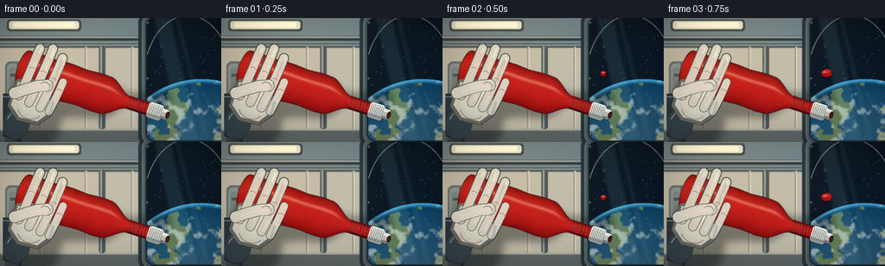
展开代码变化
--- 上一保存版本
+++ 本次保存版本
@@ -29,11 +29,11 @@
def rgba_array(image):
- return np.asarray(image, dtype=np.float32)
+ return np.asarray(image.convert("RGBA"), dtype=np.float32)
def array_image(array):
- return Image.fromarray(np.clip(array, 0, 255).astype(np.uint8), "RGBA")
+ return Image.fromarray(np.clip(array, 0, 255).astype(np.uint8)).convert("RGBA")
def capsule(draw, points, width, fill, outline=None, outline_width=2):
@@ -543,7 +543,7 @@
def finalize(image, frame_index):
- pixels = rgba_array(image.convert("RGB"))
+ pixels = np.asarray(image.convert("RGB"), dtype=np.float32)
yy, xx = np.mgrid[0:H, 0:W].astype(np.float32)
# Warm key glow, cool window spill, and a restrained vignette.
key = np.exp(-(((xx - 105) / 390) ** 2 + ((yy - 20) / 270) ** 2))
@@ -558,7 +558,7 @@
rng = np.random.default_rng(1000 + frame_index)
noise = rng.normal(0.0, 1.9, (H, W, 1)).astype(np.float32)
pixels += noise
- result = Image.fromarray(np.clip(pixels, 0, 255).astype(np.uint8), "RGB")
+ result = Image.fromarray(np.clip(pixels, 0, 255).astype(np.uint8)).convert("RGB")
result = result.resize((OUT_W, OUT_H), Image.Resampling.LANCZOS)
return np.asarray(result, dtype=np.uint8)
可观测工具轨迹
实际执行的命令与返回图片。
命令 1exit 0
/bin/bash -c "pwd && rg --files -g 'prompt.txt' -g 'GENERATION_RULES.md' -g 'task_spec.json' -g '"'!**/.git/**'"'"
命令 2exit 0
/bin/bash -c "sed -n '1,240p' prompt.txt"
命令 3exit 0
/bin/bash -c "sed -n '1,280p' GENERATION_RULES.md"
命令 4exit 0
/bin/bash -c 'python -m json.tool task_spec.json'
命令 5exit 0
/bin/bash -c "find . -maxdepth 2 -type f -not -path './.git/*' -printf '%p\\n' | sort | sed -n '1,240p'"
命令 6exit 0
/bin/bash -c "sed -n '1,280p' artifact_io.py"
命令 7exit 0
/bin/bash -c "sed -n '1,240p' player_template.html"
命令 8exit 0
/bin/bash -c "python - <<'PY' import importlib.util for m in ['numpy','PIL','scipy','cv2','imageio','matplotlib']: print(m, bool(importlib.util.find_spec(m))) PY"
命令 9exit 0
/bin/bash -c "fc-list | sed -n '1,40p'"
命令 10exit 0
/bin/bash -c "python - <<'PY'
from PIL import Image
im=Image.open('/usr/share/icons/hicolor/256x256/apps/unknown.png') if False else None
PY"命令 11exit 1
/bin/bash -c 'python generate.py'
命令 12exit 0
/bin/bash -c 'python generate.py'
命令 13exit 0
/bin/bash -c "python - <<'PY'
from PIL import Image
for i in [0,5,9,14,19]:
im=Image.open(f'frames/{i:02d}.png')
im.resize((1024,576), Image.Resampling.NEAREST).save(f'.tmp/frame_{i:02d}_4x.png')
PY"命令 14exit 0
/bin/bash -c "python - <<'PY'
from pathlib import Path
import numpy as np
from PIL import Image
files=sorted(Path('frames').glob('*.png'))
a=np.stack([np.asarray(Image.open(f).convert('RGB')) for f in files])
print('files',len(files),'shape',a.shape,'range',int(a.min()),int(a.max()))
d=np.abs(np.diff(a.astype(np.int16),axis=0)).mean((1,2,3))
print('mean frame delta',np.round(d,2).tolist())
print('artifact sizes', {p.name:p.stat().st_size for p in Path('.').iterdir() if p.is_file()})
PY"命令 15exit 0
/bin/bash -c "python - <<'PY'
import generate as g
from PIL import Image
import numpy as np
idx=9;t=idx/19
bg=g.make_background(idx,t)
cx,cy,angle=g.bottle_transform(t)
b=g.bottle_local(idx,t)
start=g.transform_point((570,175),cx,cy,angle)
fl=g.make_fluid(idx,t,start)
scene=Image.alpha_composite(bg,fl)
sm=b.getchannel('A').filter(g.ImageFilter.GaussianBlur(12))
sh=Image.new('RGBA',(g.W,g.H),(0,0,0,0)); sh.paste((15,20,22,108),(16,106),sm)
scene_sh=Image.alpha_composite(scene,sh)
rot=b.rotate(angle,resample=Image.Resampling.BICUBIC,center=(340,210))
layer=Image.new('RGBA',(g.W,g.H),(0,0,0,0));layer.alpha_composite(rot,(round(cx-340),round(cy-210)))
full=Image.alpha_composite(scene_sh,layer)
for name,im in [('bg',bg),('bottle',b),('fluid',fl),('shadow',sh),('scene',scene),('scene_sh',scene_sh),('full',full)]:
im.resize((g.OUT_W,g.OUT_H),Image.Resampling.LANCZOS).save('.tmp/debug_'+name+'.png')
for p in [(160,120),(180,140),(120,140),(250,100),(400,350)]:
print(p, np.asarray(scene_sh)[p[1],p[0]], np.asarray(full)[p[1],p[0]])
PY"命令 16exit 0
/bin/bash -c "python - <<'PY'
import generate as g
from PIL import Image
idx=9;t=idx/19
b=g.bottle_local(idx,t)
# compare finalization stages
bg=g.make_background(idx,t); cx,cy,a=g.bottle_transform(t); start=g.transform_point((570,175),cx,cy,a)
fl=g.make_fluid(idx,t,start); scene=Image.alpha_composite(bg,fl)
scene=g.composite_bottle(scene,b,cx,cy,a)
scene.resize((g.OUT_W,g.OUT_H),Image.Resampling.LANCZOS).save('.tmp/debug_prefinal.png')
pix=g.rgba_array(scene.convert('RGB'));yy,xx=g.np.mgrid[0:g.H,0:g.W].astype('float32')
key=g.np.exp(-(((xx-105)/390)**2+((yy-20)/270)**2)); pix+=key[...,None]*g.np.array([13,9,3],dtype='float32')
cool=g.np.exp(-(((xx-670)/210)**2+((yy-205)/250)**2));pix+=cool[...,None]*g.np.array([0,7,11],dtype='float32')
nx=(xx-g.W*.48)/(g.W*.61);ny=(yy-g.H*.47)/(g.H*.68);vig=g.np.clip(1.07-.25*(nx*nx+ny*ny),.72,1.03);pix*=vig[...,None]
rng=g.np.random.default_rng(1009);pix+=rng.normal(0,1.9,(g.H,g.W,1)).astype('float32')
im=Image.fromarray(g.np.clip(pix,0,255).astype('uint8'),'RGB').resize((g.OUT_W,g.OUT_H),Image.Resampling.LANCZOS)
im.save('.tmp/debug_postfinal.png')
PY"命令 17exit 0
/bin/bash -c "python - <<'PY'
import cv2, importlib.util
print('cv2',cv2.__version__)
print('ffmpeg writer ok', hasattr(cv2,'VideoWriter'))
PY
which ffmpeg || true"命令 18exit 0
/bin/bash -c 'python generate.py'
命令 19exit 0
/bin/bash -c "python - <<'PY'
from PIL import Image
for i in [0,4,9,14,19]:
Image.open(f'frames/{i:02d}.png').resize((1024,576), Image.Resampling.NEAREST).save(f'.tmp/refined_{i:02d}_4x.png')
PY"命令 20exit 0
/bin/bash -c "python - <<'PY'
from PIL import Image
im=Image.open('frames/09.png')
im.crop((155,55,230,115)).resize((600,480),Image.Resampling.NEAREST).save('.tmp/edge_crop.png')
PY"命令 21exit 0
/bin/bash -c "python - <<'PY'
from pathlib import Path
import json
import numpy as np
from PIL import Image
spec=json.loads(Path('task_spec.json').read_text())
files=sorted(Path('frames').glob('*.png'))
assert len(files)==spec['frames']
shapes=[]
for p in files:
with Image.open(p) as im:
shapes.append((im.size,im.mode))
assert all(s==((spec['width'],spec['height']),'RGB') for s in shapes)
packed=np.load('pixels.npz')['pixels']
assert packed.shape==(spec['height'],spec['width'],spec['frames'])
html=Path('index.html').read_text()
assert 'window.__pixelReady=true' in html and '__DATA__' not in html
print('validated:',len(files),'RGB frames',shapes[0],'fps',spec['fps'],'duration',len(files)/spec['fps'],'s')
print('pixels.npz:',packed.shape,packed.dtype)
print('index.html:',Path('index.html').stat().st_size,'bytes')
PY"命令 22exit 0
/bin/bash -c "python - <<'PY'
import cv2, numpy as np
from pathlib import Path
from PIL import Image
files=sorted(Path('frames').glob('*.png'))
writer=cv2.VideoWriter('.tmp/preview.mp4',cv2.VideoWriter_fourcc(*'mp4v'),4.0,(256,144))
for p in files:
frame=np.asarray(Image.open(p).convert('RGB'))
writer.write(cv2.cvtColor(frame,cv2.COLOR_RGB2BGR))
writer.release()
print('preview created',Path('.tmp/preview.mp4').stat().st_size)
PY"命令 23exit 0
/bin/bash -c "python - <<'PY'
from pathlib import Path
import numpy as np
from PIL import Image
files=sorted(Path('frames').glob('*.png'))
a=np.stack([np.asarray(Image.open(f).convert('RGB')) for f in files]).astype(np.float32)
# Motion should be progressive, with the main activity in the squeeze and dispersal interval.
d=np.abs(np.diff(a,axis=0)).mean((1,2,3))
print('adjacent deltas:', ' '.join(f'{v:.2f}' for v in d))
print('first/mid/last red pixel fractions:',*[f'{(im[...,0]>im[...,1]*1.55).mean():.3f}' for im in (a[0],a[9],a[19])])
print('nonblank range:',a.min(),a.max())
PY"命令 24exit 1
/bin/bash -c 'python generate.py'
命令 25exit 0
/bin/bash -c 'python generate.py'
命令 26exit 0
/bin/bash -c "python - <<'PY'
from pathlib import Path
import json
import numpy as np
from PIL import Image
spec=json.loads(Path('task_spec.json').read_text())
files=sorted(Path('frames').glob('*.png'))
assert len(files)==20
for p in files:
with Image.open(p) as im:
assert im.size==(256,144) and im.mode=='RGB'
packed=np.load('pixels.npz')['pixels']
assert packed.shape==(144,256,20) and packed.dtype==np.uint32
html=Path('index.html').read_text()
assert 'window.__pixelReady=true' in html and '__DATA__' not in html
print('final validation passed')
print('frames',len(files),'size','256x144','fps',spec['fps'],'duration',len(files)/spec['fps'])
print('npz',packed.shape,str(packed.dtype),'index',Path('index.html').stat().st_size,'bytes')
PY
python -m py_compile generate.py"命令 27exit 0
/bin/bash -c 'git status --short 2>/dev/null || true'
视觉工具实际返回图片 1
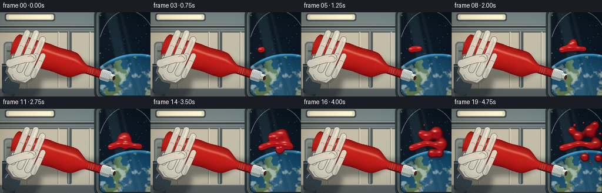
视觉工具实际返回图片 2
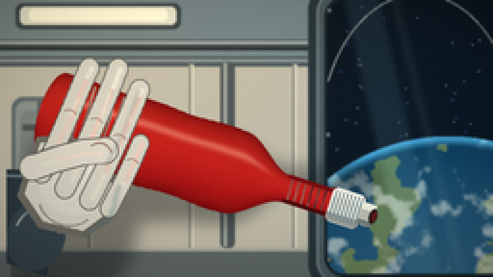
视觉工具实际返回图片 3
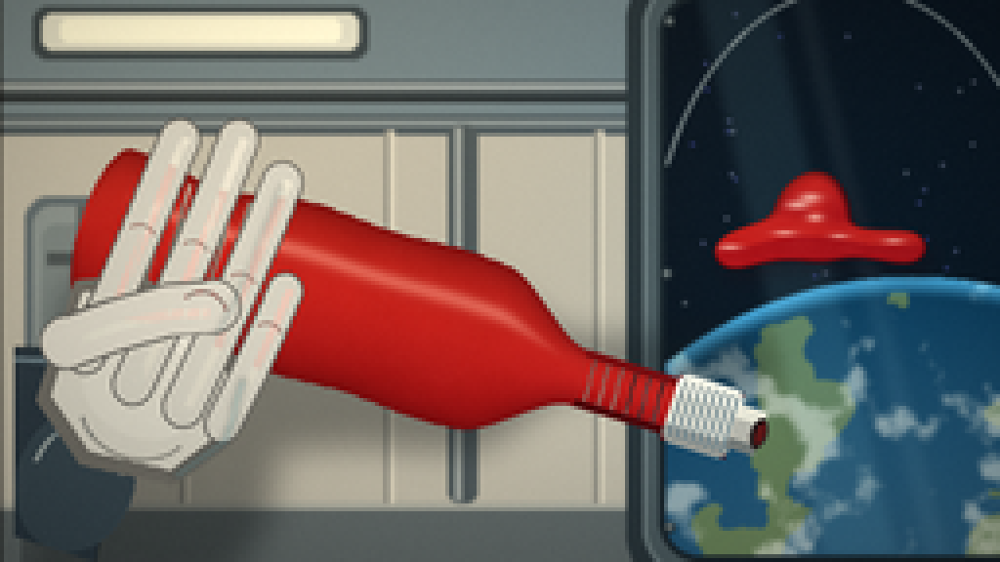
视觉工具实际返回图片 4
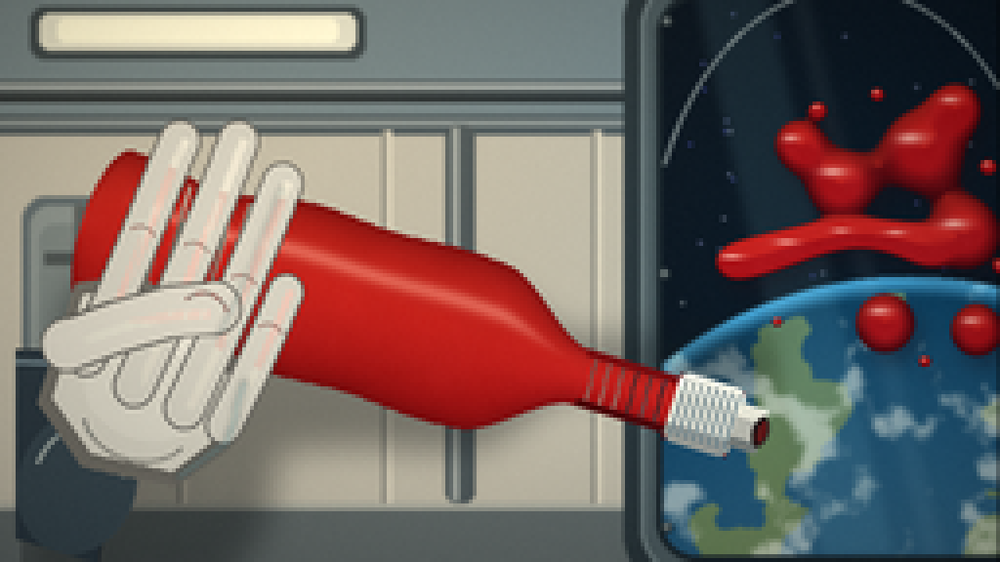
视觉工具实际返回图片 5
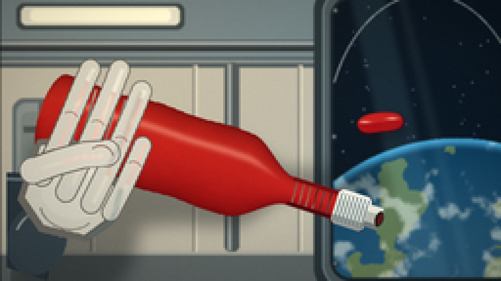
视觉工具实际返回图片 6
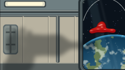
视觉工具实际返回图片 7
视觉工具实际返回图片 8
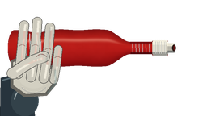
视觉工具实际返回图片 9
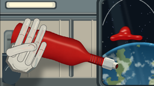
视觉工具实际返回图片 10
视觉工具实际返回图片 11
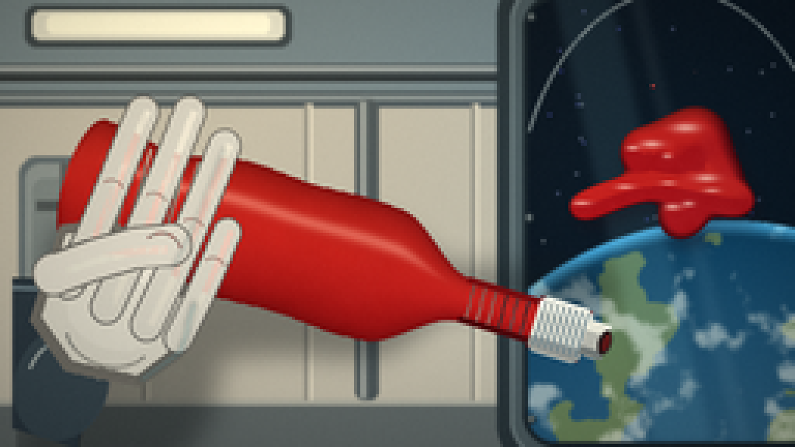
视觉工具实际返回图片 12
视觉工具实际返回图片 13
视觉工具实际返回图片 14
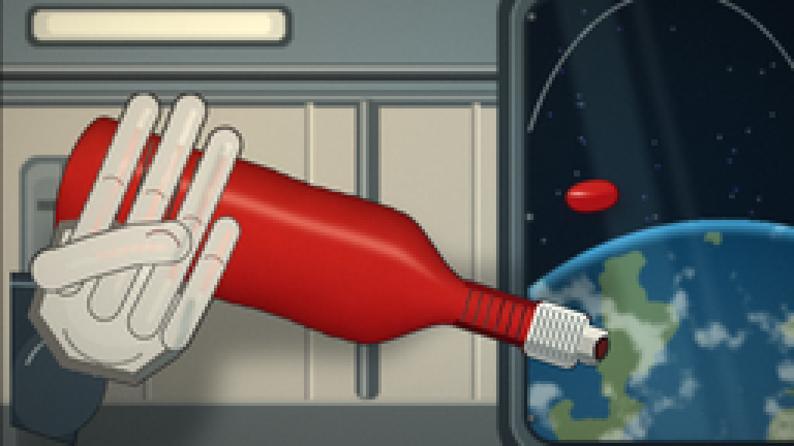
视觉工具实际返回图片 15
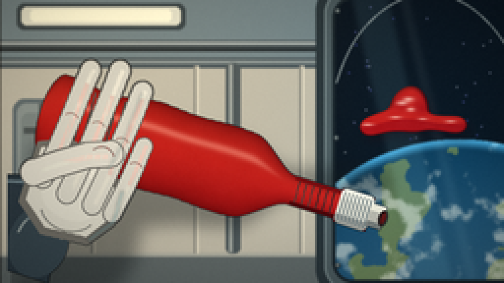
视觉工具实际返回图片 16
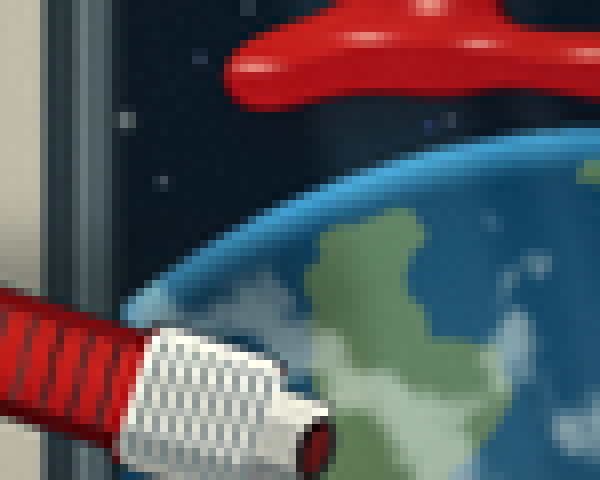
视觉工具实际返回图片 17

保存候选 3 份；完成命令 27 次；可验证图片返回 17 张。原始 API 响应与完整日志保留在本地。